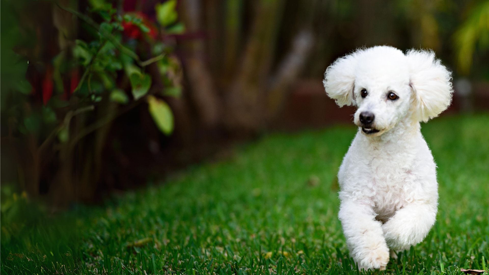
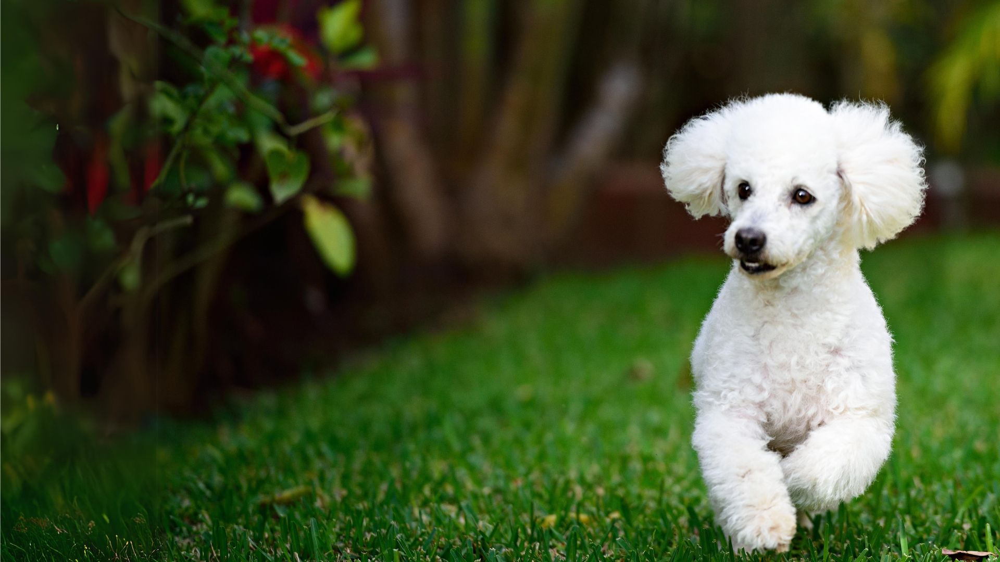

Chihuahua
O Chihuahua é uma das menores raças de cães do mundo, conhecida pelo seu tamanho diminuto e personalidade marcante. Originário do México, este cãozinho é famoso por sua lealdade e afeto incondicional aos seus donos.
Dachshund
O Dachshund, ou "cão salsicha", é uma raça de cachorro de corpo longo e pernas curtas, originária da Alemanha. Criados inicialmente para caçar pequenos animais, como texugos e coelhos, esses cães são conhecidos por sua personalidade brincalhona, leal e corajosa. Existem três tipos de pelagem: lisa, longa e dura. Embora sejam afetuosos e se adaptem bem a ambientes familiares, podem ser teimosos, requerendo socialização adequada desde filhotes.
Buldogue Francês
O Buldogue Francês é um cão pequeno, conhecido por suas orelhas grandes e expressão fofa. Originário da França, é um animal de estimação popular, caracterizado por ser afetuoso, sociável e brincalhão. Adapta-se bem a ambientes urbanos, mas requer cuidados especiais devido a problemas respiratórios. É importante garantir socialização e treinamento desde filhote.
Husky Siberiano
O Husky Siberiano é uma raça de cão originária da Sibéria, criada para puxar trenós em climas frios. É conhecido por sua resistência, agilidade e beleza. Tem olhos que podem ser azuis ou marrons e uma pelagem densa. Sua personalidade é independente, amigável, mas pode ser teimosa. É uma raça muito ativa e requer exercícios regulares.
Akita
O Akita é uma raça de cão originária do Japão, conhecida por sua lealdade e coragem. Tem uma aparência robusta, com pelagem espessa e orelhas pequenas e eretas. O Akita foi originalmente criado para caça e proteção. Ele é reservado com estranhos, mas extremamente leal à sua família. Famoso pela história de Hachiko, é considerado um símbolo de lealdade no Japão.
Golden Retriever
O Golden Retriever é uma raça de cão originária do Reino Unido, criada para a caça de aves aquáticas. É conhecido por sua inteligência, obediência e comportamento amigável. Tem uma pelagem longa e dourada, além de ser muito sociável e carinhoso, o que o torna ideal como cão de família e para trabalhos como cão-guia ou de terapia. É uma raça ativa, que precisa de exercícios regulares e adora brincar, especialmente na água.
Shiba Inu
O Shiba Inu é uma raça de cão japonesa, conhecida por seu porte pequeno, aparência fofa e personalidade independente. Originalmente criado para caça, é corajoso, leal e atento. Embora reservado com estranhos, é carinhoso com sua família. Pode ser um pouco teimoso, mas responde bem ao treinamento com paciência.
Poodle
O Poodle é uma raça de cão conhecida por sua inteligência, elegância e pelagem encaracolada. Originário da França, é uma das raças mais inteligentes, fácil de treinar e muito versátil. Existe em três tamanhos: toy, miniatura e standard. É ativo, sociável e se dá bem com crianças e outros animais. Além disso, sua pelagem requer cuidados regulares.